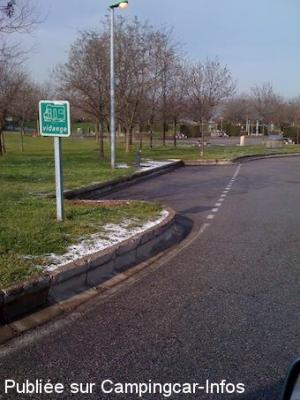
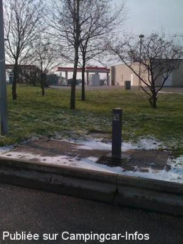
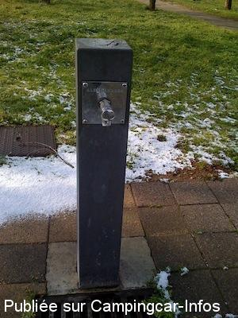
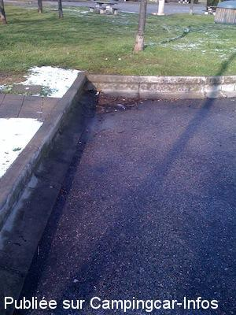

AA = Aire de services sur autoroute de :
A.7 Marseille=>Lyon PONT DE L'ISERE
(N° 20)
Accès/adresse :
Aire de Pont de l'Isère
26600 PONT DE L'ISERE
26600 PONT DE L'ISERE
Latitude : (Nord) 45.02069° Décimaux ou 45° 1′ 14′′
Longitude : (Est) 4.87694° Décimaux ou 4° 52′ 36′′
Tarif : Gratuit
Type de borne : Autre
Services :


Autres informations :

Le 04/02/2010 par de l'aire signalée seulement sur place

Le 04/02/2010 par de situation derrière la station

Le 04/02/2010 par du robinet, simple, l'été seulement

Le 04/02/2010 par de la simplissime grille de vidange, en bout.
de
M
le 04/02/2010 :
Non signalée, c'est pas évident à trouver : aller par la droite derrière la station de carburant, coordonnées GPS corrigées. Simple, limite pour les eaux noires, gratuit. Pas d'eau en période hivernale.
Non signalée, c'est pas évident à trouver : aller par la droite derrière la station de carburant, coordonnées GPS corrigées. Simple, limite pour les eaux noires, gratuit. Pas d'eau en période hivernale.
de
M.
le 03/08/2008 :
Simplissime, une grille en bout, un robinet d'eau. Mais ça marche et on est invité à s'en servir.
Simplissime, une grille en bout, un robinet d'eau. Mais ça marche et on est invité à s'en servir.